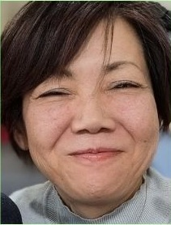
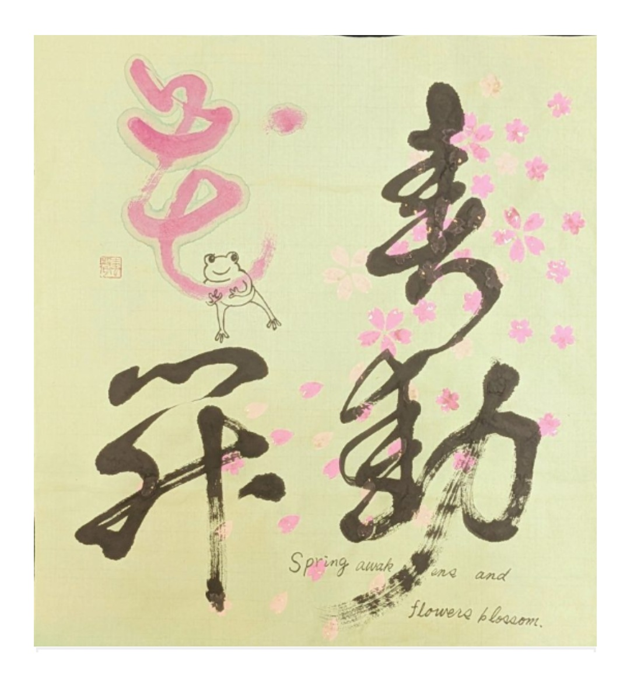
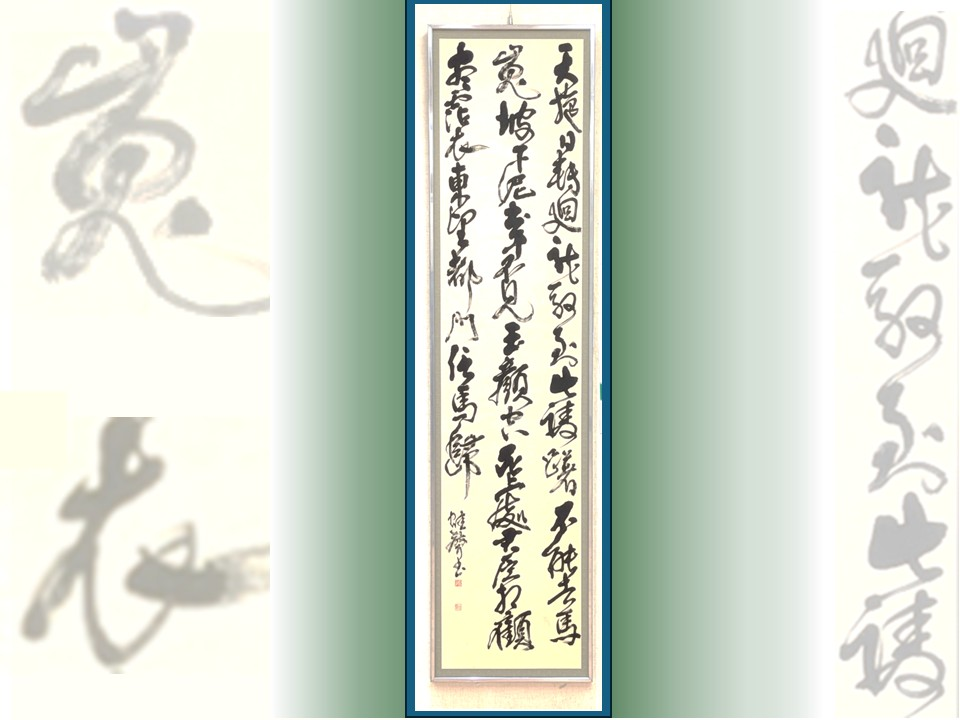
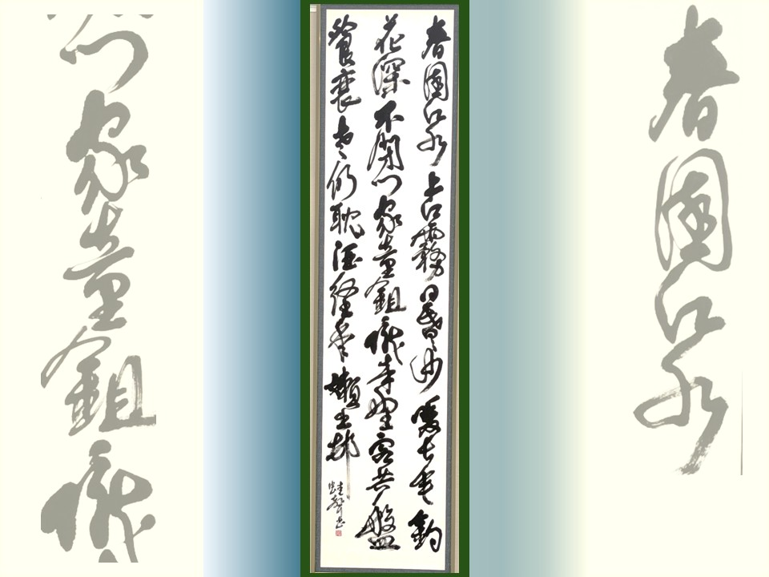
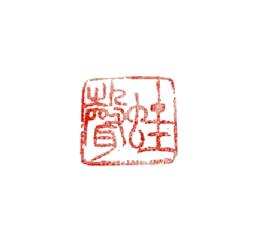

ART CALLIGRAPHY PORTFOLIO
命を吹き込む、書の呼吸
The Brush That Breathes Life
ARTIST PROFILE & STATEMENT

1973年兵庫県生まれ、姫路市在住。玄燿書道会所属。 Born in Hyogo in 1973. Member of Genyo Calligraphy Association.
2000年に師範を取得するも、最愛 of 師（山根溪石先生）の他界、自身や家族の体調不良（線維筋痛症）が重なり、一度は書道を完全に封印しました。しかし昨年、断捨離を機に道具を捨てられない自分に気づき、同じ会派の師の井上映粧先生の元へ再入門。25年ぶりに再び書の道を歩み始めました。 After earning my Master's License in 2000, the passing of my master Master Keiseki Yamane and personal illness (Fibromyalgia) forced me to seal away my calligraphy. Last year, unable to discard my tools while decluttering, I re-entered the brush under my master's direct disciple, restarting my journey after 25 years.
自分自身が身体の不自由さや痛みを経験したからこそ、今、介護福祉士として夜勤専従で接する高齢者の方々や、障害を持たれている方々の気持ちが痛いほど理解できるようになりました。 Having experienced physical limitations, I deeply empathize with the elderly and individuals with disabilities whom I care for as a night-caregiver.
そして、生死に向き合う福祉の現場で、日々懸命に利用者様を支え、現場を存続させている介護士たちの情熱や「影の支え」としての奮闘を伝えていきたいと考えています。過酷な状況下でも笑顔を絶やさぬスタッフや関わるすべての人に希望を届けたいという祈りを込め、一滴の墨に生命を吹き込み続けています。 Facing life and death daily, I want to express the dedication and silent endurance of the caregiving staff who work relentlessly on the frontlines to sustain the welfare field as an unsung support system. Desiring to bring hope and smiles to these hard-working staff and all who are involved, I infuse every drop of ink with vital life-energy.
FEATURED WORKS & AWARDS

【作品サイズ：56cm × 53cm (22 × 20.8in)】
介護士として夜勤専従で働きながら、日々古典の勉強と作品活動に励む中で生まれたアート書。寒い冬が終われば必ず温かい春が来るという希望を込め、世界中の人々に愛される桜の舞う優美さと、蛙の跳び出すような春の生命力を、豊かなデザインと物語性、精度高きコンセプトで表現。ニューヨーク国際書道展にて準優勝賞を受賞。
This calligraphy artwork was created while working exclusively on night shifts as a caregiver, balancing daily classical studies and creative pursuits. Conveying the hope that a warm spring always follows a cold winter, it expresses the elegance of cherry blossoms—loved by people all over the world—and the vibrant vitality of spring, like a leaping frog, through rich design, storytelling, and a refined concept. Awarded Second Prize at the New York International Calligraphy Exhibition.
表具 / Mounting：玉木楽山堂

【作品サイズ：240cm × 60cm (94.4 × 23.6in)】
政治の混乱による悲劇的な別れを描いた白居易の詩。現代の災害や混迷、突然の別れに重ね合わせ、家族や大切な人を想う深い愛情を生命力溢れる筆致で表現。第76回 玄耀書道展 会員の部にて「神戸市民文化振興財団賞」を受賞した渾身の大作。
Based on the classic poem depicting profound love and eternal parting amidst political turmoil. Overlapping with the chaos and sudden losses of our modern world, this piece expresses deep affection and resilience. Winner of the Kobe Cultural Support Foundation Prize at the 76th Genyo Exhibition.
表具 / Mounting：玉木楽山堂

【作品サイズ：240cm × 60cm (94.5 × 23.6in)】
中国・明時代の詩人袁凱の詩の一部。俗を離れて穏やかな隠遁生活を楽しむ老人の日常を描いた詩。介護士として日々接する高齢者たちの「時代を生き抜いた力強さ」と「老いた儚さ」の双方を重ね合わせ、理想の年の重ね方をイメージした作品。兵庫県展公募入選を果たした、25年ぶりの復帰第一作。
This piece illustrates the peaceful, quiet retirement of an old man. As a caregiver, I infused this calligraphy with both the incredible strength of the elderly who survived history and their gentle, fragile side. Accepted into the Hyogo Prefectural Exhibition as my first piece in 25 years.
表具 / Mounting：玉木楽山堂
CALLIGRAPHY CHRONOLOGY
ニューヨーク国際書道展にて『春動花開』が準優勝賞を受賞。第76回 玄耀書道展にて神戸市民文化振興財団賞を受賞。兵庫県展入選。
Awarded Runner-up Prize at NY Exhibition. Won Foundation Prize at Genyo Exhibition. Accepted into the Hyogo Prefectural Exhibition.
道具の断捨離を機に元の師の直弟子である井上映粧先生に師事し再入門。ニューヨーク国際書道展にて「翔」が入選し奇跡の再起を果たす。
Guided back to the brush by re-entering the school under Master Eisho Inoue. Miraculously accepted into the NY Exhibition with the piece "Sho" (To Soar).
師の他界、自身や家族の病気（線維筋痛症）が重なり、書道を完全に封印する。
Due to master's passing and personal illness, sealed away calligraphy for 24 years.
日本書芸院 二科会員推薦賞 受賞。同年、最高資格「師範」を取得。
Received the Nihon Shogeiin Nika Member Recommendation Award. Successfully earned Calligraphy Master's License.
玄耀書道会 会員、および兵庫県書作家協会 準会員に推挙。
Recommended as a Member of Genyo Calligraphy Society and Associate Member of the Hyogo Calligrapher Association.
国内最高峰の公募展の一つ「読売書法展」にて通算3回入選を果たす。
Accepted into the Yomiuri Shofoten Exhibition three times in total.
山根溪石先生に入門。書の深淵と神髄を学び始める。
Entered under Master Keiseki Yamane. Began learning the essence and depth of calligraphy.
FUTURE VISION & SUPPORT
身体の不自由な方や痛みを経験したからこそ、誰もがハンディキャップに関係なく生命力を体感し、見るだけで内側から湧き上がるエネルギーを感じて、心と魂で深く繋がることができるバリアフリーな作品・空間展示を構想しています。
Designing barrier-free art installations where anyone, regardless of physical limitations, can feel raw life-energy and connect on a soul level.
高齢者施設や障害者施設において、一人ひとりの生きる表現力を引き出す新しい書道レクリエーションを提案。書の楽しさに触れ、参加者や現場の過酷なケアスタッフに内側から自然と笑顔を届けます。
Proposing dynamic calligraphy workshops in care facilities to bring therapeutic joy and genuine smiles to both residents and overworked care staff.
社会に関わるすべての人に笑顔を届ける活動やビジョンに共感し、一緒にサポート・協力をしてくださる個人・企業様を広く募集しています。店舗ロゴ、インテリア書、大切な人へのギフトなど、各種オーダーメイド制作も随時承っております。
Seeking collaborators and supporters who share our vision of merging welfare and art. We also accept custom commissions (store logos, interior art, personalized gifts).

Commissions & Inquiries
店舗ロゴ、インテリア書、大切な人へのギフトなど、各種オーダーメイドの作品制作（オーダー）を承っております。お気軽にお問い合わせください。
For custom calligraphy works, interior art, exhibition collaborations, or any custom orders, please feel free to reach out via Instagram (@ASEI_2026).